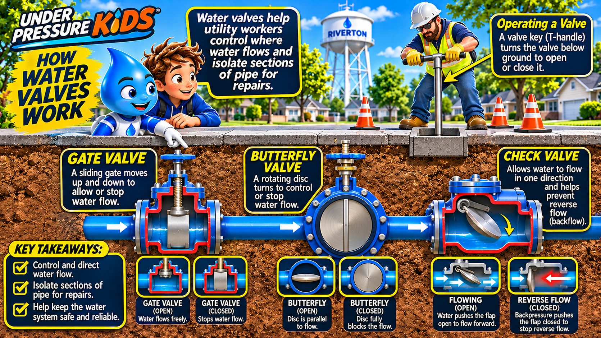

What Is a Water Valve?

Piper noticed a utility worker turning a long metal tool in the middle of a street in Riverton.
“What is he doing?” she asked.
Drip explained that the worker was operating an underground water valve.
Just Like Your Faucet
When you turn off your faucet, a valve inside stops the water from flowing.
Underground water valves do something similar, but they control water flowing through much larger pipes.
Hiding Beneath the Street
Many water valves are buried underground.
A small metal cover at street level allows workers to reach the valve using a special tool called a valve key.
You might walk past one every day without even noticing it!
Why Do We Need Valves?
Imagine a water pipe breaking in Riverton.
Without valves, workers might have to shut off water to a much larger part of town.
By closing certain valves, workers can often stop water from flowing to the damaged section while keeping water flowing to other neighborhoods.
Different Valves for Different Jobs
Some valves use a gate that moves up and down to control the flow of water.
Others use a round disk that turns inside the pipe.
Bolt enjoys learning how these different mechanical parts work!
Did You Know?
Some water valves are so large that a person could stand upright inside the opening!
Your Next Discovery
Look for small, round metal covers in your neighborhood while walking with an adult.
Some may have the word WATER stamped on them.
Never try to open or operate one. That's a job for trained utility workers.
Keep exploring! There's an amazing world beneath your feet.